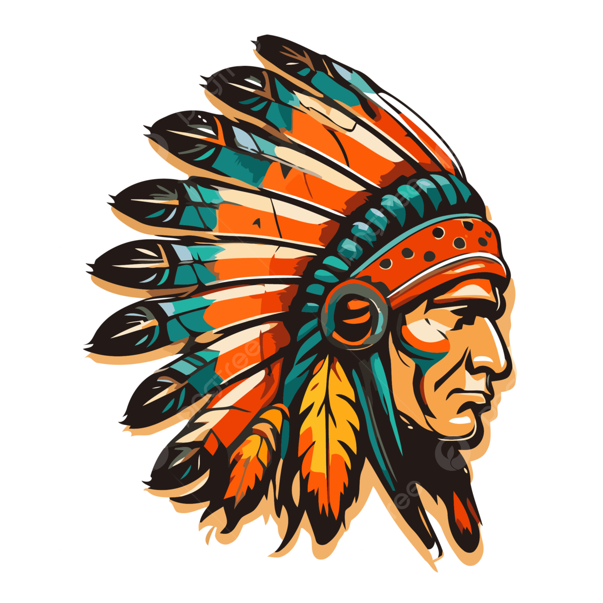

Quando os colonizadores europeus chegaram às Américas, o primeiro ato foi classificar diferentes povos indígenas como “índios”, noção genérica, pejorativa e homogênea que persiste até hoje. Esta palavra foi definida pelos colonizadores portugueses, que acreditavam terem chegado às Índias, e durante todos esses anos, o termo foi socialmente ligado a pessoas primitivas. Os termos corretos a serem utilizados atualmente são povos originários ou povos indígenas, por reconhecerem a diversidade étnica e cultural entre eles.
Para Darcy Ribeiro, ser indígena não é apenas uma questão de ancestralidade étnica, mas também uma condição que envolve uma profunda ligação com a terra, a cultura e a espiritualidade. Ele via os povos indígenas como os verdadeiros donos da América Latina, detentores de uma riqueza cultural e de conhecimento que é fundamental para a identidade do continente.Portanto, para ele, ser indígena ia além de uma identidade étnica; era um modo de vida que deveria ser valorizado e protegido. Para o antropólogo Eduardo Viveiros de Castro, indígena é qualquer membro de uma comunidade indígena, reconhecido por ela como tal. Comunidade indígena funda-se em relações de parentesco ou vizinhança e mantém laços históricos-culturais com as organizações sociais indígenas pré-colombianas.Os povos indígenas se reconhecem e são reconhecidos como pertencentes a grupos étnicos e culturais que se distinguem na organização social entre eles.
Sobre a origem dos indígenas brasileiros, existem duas hipóteses aceitas pela, segundo o Instituto Socioambiental (ISA). A primeira é de que os indígenas descendem dos povos asiáticos que atravessaram o estreito de Bering há 62 mil anos. A segunda, defende uma única grande onda migratória no começo, com a vinda posterior de grupos aparentados aos povos da Oceania. Estudos arqueológicos recentes estabelecem a chegada dos primeiros habitantes do Brasil à Bahia e ao Piauí, entre 20 e 40 mil anos atrás.
Ao longo desse processo, teria ocorrido a diferenciação linguística e social que deu origem aos troncos indígenas Macro-Jê e Macro-Tupi. Deste último, entre os séculos 8 e 9, originaram-se as nações Tupi e Guarani. São as que mais se destacam nos últimos 500 anos da História do Brasil, justamente porque tiveram um contato mais próximo com o homem branco. Na chegada de Pedro Álvares Cabral, em 1500, estima-se que os índios brasileiros fossem entre um e cinco milhões. Os tupis ocupavam a região costeira que se estende do Ceará à Cananéia (SP). Os guaranis espalhavam-se pelo litoral Sul do país e a zona do interior, na bacia dos rios Paraná e Paraguai. Em outras regiões, encontravam-se outras tribos, genericamente chamados de tapuias, palavra tupi que designa os índios que falam outra língua.
Durante os primeiros anos do descobrimento, os nativos foram tratados "como parceiros comerciais", uma vez que os interesses portugueses voltaram-se ao comércio do pau-brasil, realizado na base do escambo. Segundo os cronistas da época, os indígenas consideravam os europeus amigos ou inimigos, conforme fossem tratados: amistosamente ou com hostilidade. Com o passar do tempo, e ante a necessidade crescente de mão de obra dos senhores de engenho, essa relação sofreu alterações. Com a instalação do governo-geral, em 1549, intensificou-se a escravidão dos indígenas nas diversas atividades desenvolvidas na colônia, gerando constantes conflitos.
Não existe uma única definição de indígenas ou requisitos rígidos para ser considerado como tal. A identidade indígena é complexa e varia entre as diferentes comunidades e culturas. Geralmente, a conexão com a terra, a língua, a cultura e as tradições desempenham um papel importante na identidade indígena. No entanto, a diversidade é grande, e as tradições podem variar muito de um grupo para outro. O reconhecimento como indígena frequentemente depende de fatores históricos, culturais e legais, e é estabelecido de diferentes maneiras em cada país.
RESOLUÇÃO Nº 4, DE 22 DE JANEIRO DE 2021
A DIRETORIA COLEGIADA DA FUNDAÇÃO NACIONAL DO ÍNDIO, no uso das atribuições que lhe são conferidas pelo Estatuto, aprovado pelo Decreto nº 9.010, de 23 de março de 2017, alterado pelo Decreto nº 9.425, de 27 de junho de 2018, e considerando o Processo 08620.010083/2020-10, resolve:
Art. 1º Definir novos critérios específicos de heteroidentificação que serão observados pela FUNAI, visando aprimorar a proteção dos povos e indivíduos indígenas, para execução de políticas públicas.
Art. 2º Deverão ser observados os seguintes critérios:
I - Vínculo histórico e tradicional de ocupação ou habitação entre a etnia e algum ponto do território soberano brasileiro;
II - Consciência íntima declarada sobre ser índio;
III - Origem e ascendência pré-colombiana;
IV - Identificação do indivíduo por grupo étnico existente, conforme definição lastreada em critérios técnicos/científicos, e cujas características culturais sejam distintas daquelas presentes na sociedade não índia.
Há cerca de 732 Terras Indígenas, de norte a sul do território nacional. São habitadas por 266 povos indígenas, que falam mais de 150 línguas. As terras tradicionalmente ocupadas pelos indígenas são definidas na Constituição Federal como aquelas: "por eles habitadas em caráter permanente, as utilizadas para suas atividades produtivas, as imprescindíveis à preservação dos recursos ambientais necessários a seu bem-estar e as necessárias a sua reprodução física e cultural, segundo seus usos, costumes e tradições". Conforme o Censo 2022, no Brasil vivem 1.693.535 pessoas que se declaram como indígena concentradas na Amazônia Legal, sendo que 13,8% das terras do país são reservas. Desse total de pessoas, mais da metade (51,2%) da população indígena estadas aos povos indígenas
Receba conteúdos atualizados sobre esse assunto.